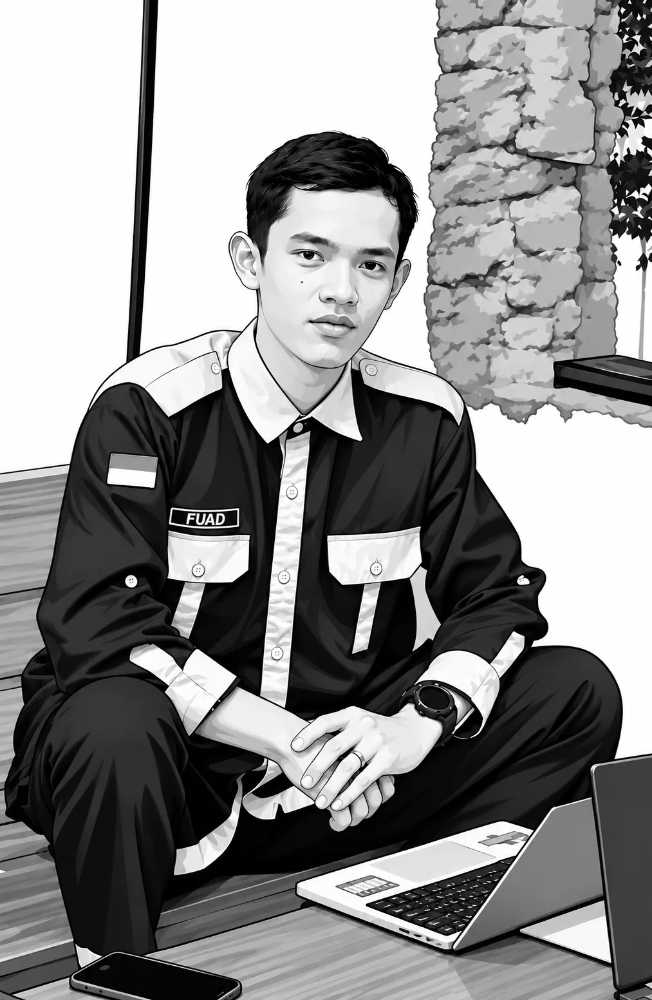
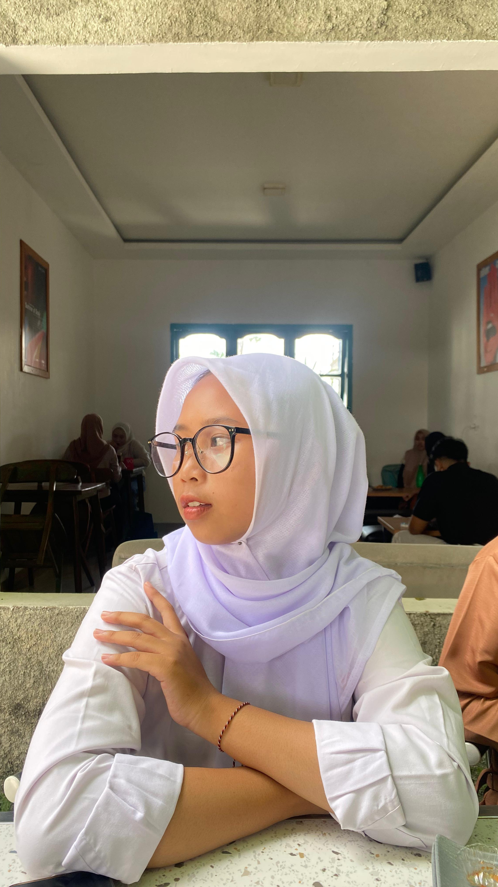
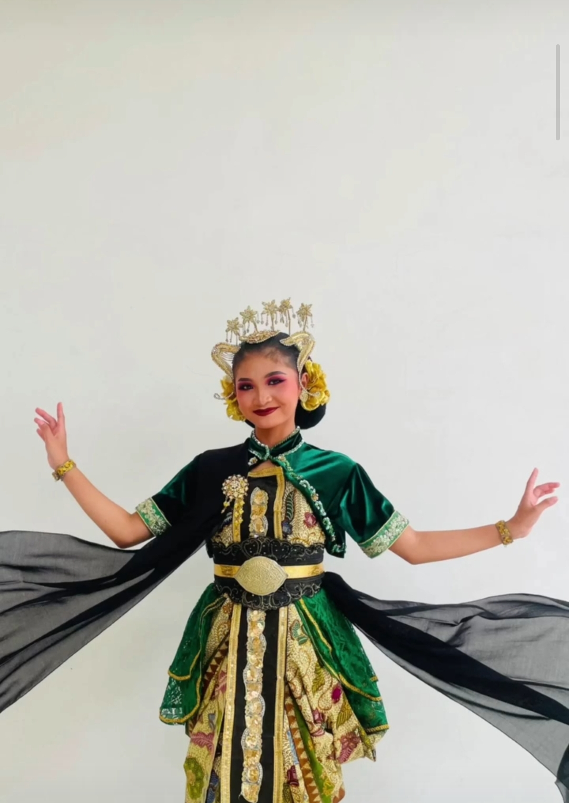
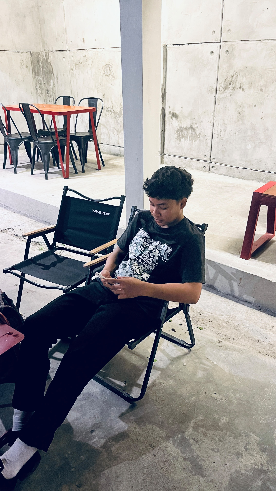
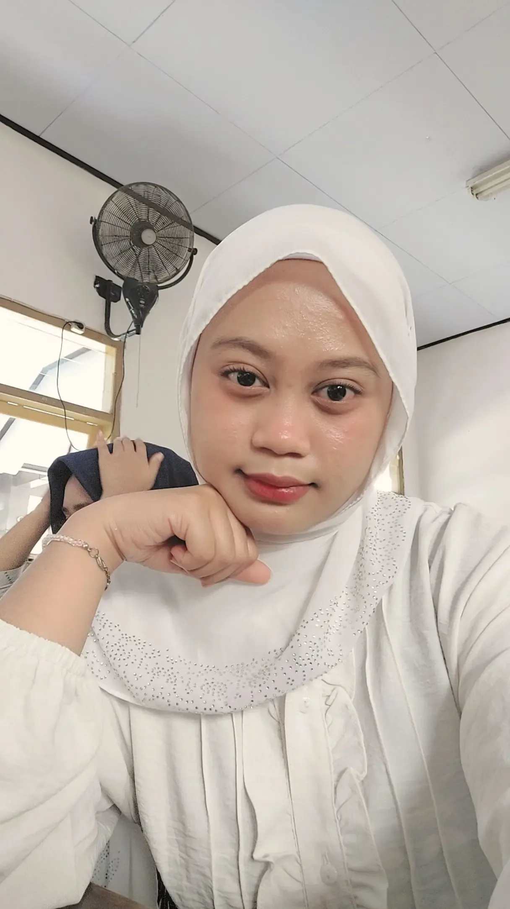

PROJECT MANAGER
Muhammad Fuad Hasan
@foead_anak_baik
Tim Siswa yang mengeksplorasi teknologi, desain, dan gagasan melalui proyek nyata dan kolaborasi. Kami menghubungkan perangkat lunak kreatif, purwarupa perangkat keras, dan pengalaman komputasional.

Kami adalah kelompok kecil yang terdiri dari lima siswa dengan minat di bidang pengembangan perangkat lunak, khususnya web application, serta desain digital. Kami sering berkumpul bersama untuk bertukar ide, belajar hal baru, dan mengembangkan berbagai proyek berbasis web.
Fokus utama kami adalah membuat aplikasi web yang tidak hanya menarik secara tampilan, tetapi juga memiliki fungsi yang jelas dan dapat digunakan untuk menyelesaikan berbagai kebutuhan. Mulai dari merancang antarmuka, membangun sistem backend, mengelola database, hingga mengintegrasikan berbagai fitur menjadi satu aplikasi yang utuh.
Kami masih dalam tahap belajar dan terus mengembangkan kemampuan. Tidak semua proses berjalan lancar. Terkadang kami harus berhadapan dengan bug, kesalahan logika, masalah database, atau desain yang perlu diperbaiki. Namun, setiap kendala menjadi bagian dari proses untuk memahami dan membangun sesuatu dengan lebih baik.
Bagi kami, sebuah ide akan lebih berarti ketika bisa diwujudkan menjadi aplikasi yang benar-benar berjalan dan memberikan manfaat. Karena itu, kami berusaha membuat proyek yang bisa dicoba, digunakan, dan jika memungkinkan, dibagikan secara terbuka agar dapat dipelajari atau dikembangkan oleh orang lain.
Kami bukan sekumpulan orang yang mengaku sudah ahli dalam segala hal. Kami adalah siswa yang memiliki rasa ingin tahu, senang membangun sesuatu, dan ingin terus berkembang melalui setiap proyek yang kami kerjakan.
Learn Together. Build Something Real.
Berangkat dari rasa ingin tahu dan kemandirian Siswa.
Berbagi kode, skema perangkat keras, dan wawasan secara terbuka.
Mengubah riset eksperimental menjadi karya nyata yang berfungsi.
Lima orang dengan keahlian berbeda yang bekerja erat di bidang perangkat lunak dan perangkat keras.

PROJECT MANAGER
@foead_anak_baik

ANGGOTA TIM
@llovessaa

ANGGOTA TIM
@ldnys_nandd

ANGGOTA TIM
@mapenggk

ANGGOTA TIM
@v4nn.dw
Bukti konsep yang berfungsi, perangkat lunak spasial, dan paket sumber terbuka yang kami buat di sesi lab.

Visualisasi audio waktu nyata di peramban yang mengubah frekuensi mikrofon menjadi pergeseran titik reaktif dan bentuk tipografi kinetik.
Permukaan proyeksi akrilik berlapis yang melacak jarak dan gestur tangan beberapa pengguna dengan sensor LiDAR jarak dekat dan protokol OSC.
Interpolasi fon parametrik waktu nyata yang dipicu nada mikrofon dan mengubah ukuran optis, kemiringan, serta ketebalan fon.
Simulasi sisi klien berkinerja tinggi untuk fisika kain dan simpul spasial, dikendalikan gestur kamera web secara waktu nyata.
Perangkat dan teknologi yang kami gunakan serta evaluasi dalam proyek.